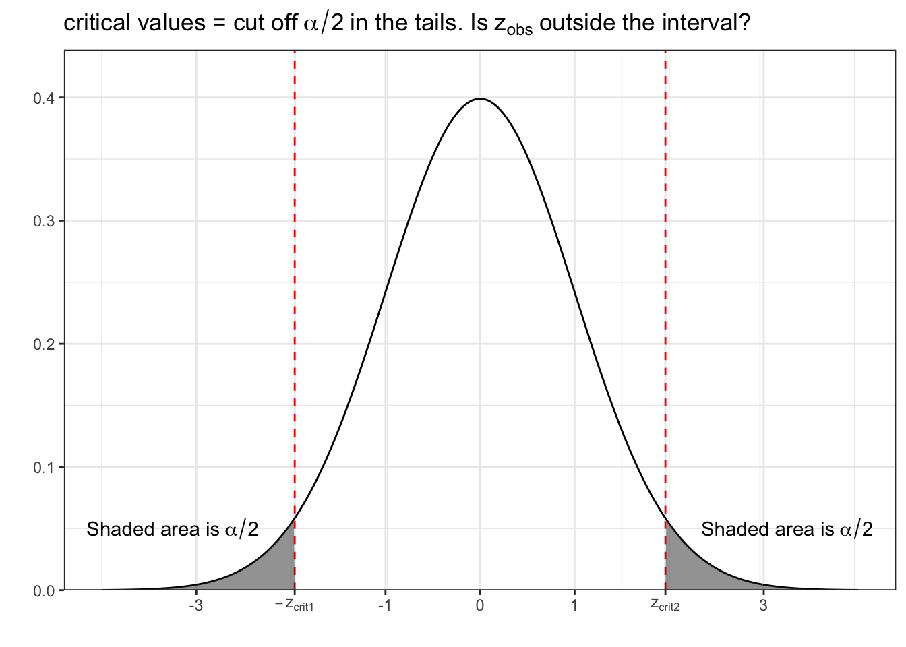
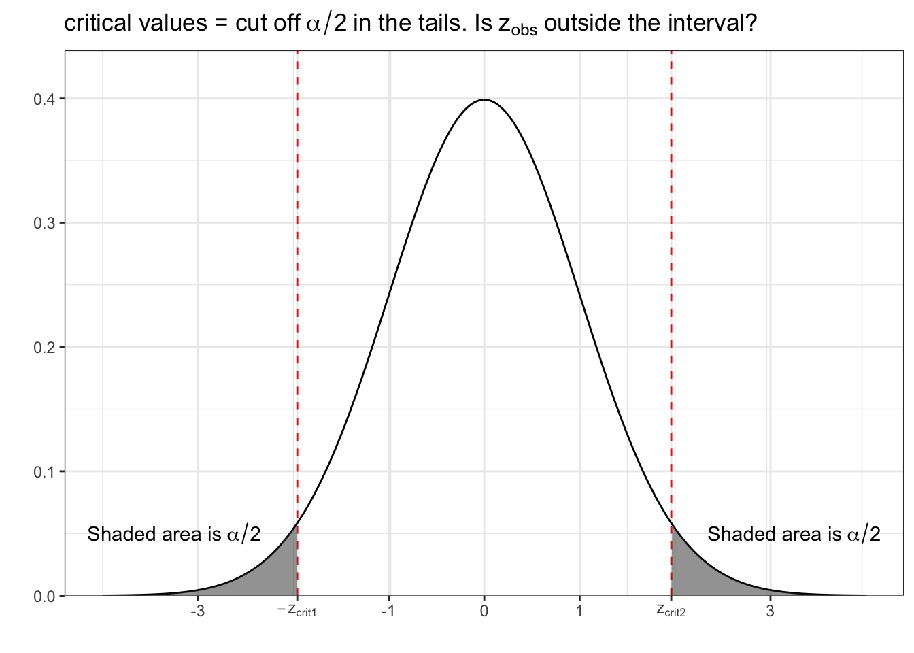

2 Introduction to Biostatistics

Sullivan, L. M. 2017. Essentials of Biostatistics in Public Health. Jones & Bartlett Learning. https://books.google.com/books?id=8dhLDgAAQBAJ.

Sullivan, L. M. 2017. Essentials of Biostatistics in Public Health. Jones & Bartlett Learning. https://books.google.com/books?id=8dhLDgAAQBAJ.